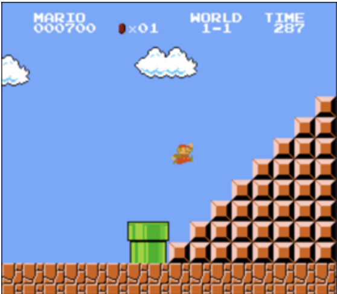
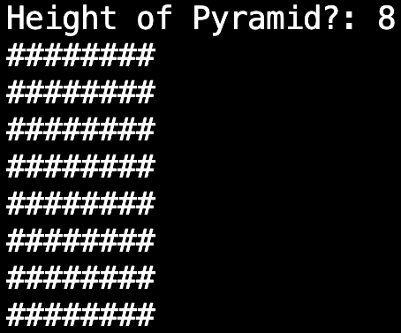

Wednesday, 7th of December
The Man and the C

After a short holiday I've returned to continue with my learning in cs50's Introduction to Computer Science. This week, we progress from the visual coding language Scratch to a more powerful language called C.
This will be another introductory language which we will use as a springboard to other languages in later weeks. The aim is to gain an understanding of the typical framework of programming languages.
To start the lecture, we recalled our understanding of the basic ideas in programming, like functions, conditionals, and loops and learnt how they can be executed in C.
We learned that C is a more opaque language than Scratch - requiring a knowledge of a more sophisticated and less human-readable syntax - but there are methods to ensure code is made easier to follow. Methods include formatting of code, efficiency of algorithms, adding clear comments and whether the code solves problem as intended.
Our first program mirrored that of our first Scratch demo, printing “hello, world”. Immediately, it's clear there are a few extra requirements in this language for a simple program to function, such as the inclusion of Standard Input and Output header (stdio.h) and the loading of a main function.
After this demo we learnt about Integrated Development Environments which can be used write, translate and run code and terminal windows. And building on our understanding of the binary system - which computers use to represent and process information - we learnt the difference between source code and machine code.
In this week's study, for example, source code is written in the high-level, moderately human-readable language C, however, in it's initial form, it is not able to give instructions to a computer. The source code, in order for the computer to understand it, needs to be translated - or compiled - into machine code by a program called a compiler. In the IDE provided by this course, we can compile our source code by using the 'make' command.
After an overview of Linux concepts necessary for this weeks problems sets we moved onto working through some basic programs in C, in order to introduce to us to the syntax and style requirements of C and how it uses data types, functions, arguments, loops, operators, etc.
One element of C's style is the ability it has to condense code into more succint instructions. One such example is a generic while loops that involves counter incrementing.

Which with some rearranging can be displayed in this shortened format.
To end the lecture, we discussed the limitations of 32-bit and less-so 64-bit systems when representing real numbers with precision, and how this imprecision leads to integer overflow. This happens when an arithmetic operation requires a value which is outside the range of a computer's capacity to represent with bits i.e. numbers larger than approx. ± 2.2 billion cannot be represented by 32-bits). We discussed some solutions to these problems, or, in other words, how to make code more “correct”.
Problem Sets
To complete the week's work we needed to complete to problem sets. The first involved, recreating the pyramid in the original Super Mario Bros using ASCII art. The second tasked us with calculating the minimum number of coins needed when dispensing change.
The second task had most of the code provided, and just needed me to make some changes, inputing simple arithmetic into several pre-formed functions. It was more of an exercise in repetition to drill in familiarity with the syntax of C, so not much explanation is necessary.
The first task - recreating the Mario pyramid using # as bricks - was a greater challenge, and worth recounting.

In the lecture we were shown how to create a square grid of n x n size, with n being a size inputted by user.

The code looked like this.

This code works by nesting one loop within another. The outer loop (using int i) is responsible for beginning each row, while the row number is less than n. The inner loop (using int j) prints a number of # corresponding to n.
I inferred the code we would need to print the Mario pyramid would follow a similar scheme. After several failed attempts to print the pyramids out right, I decided to break down my task into segments. In the first segment, I decided to simply try to print the correct number of # I would need per line (ie row one would need one #, row two needed two #, etc.), looking like the image below.

This was the code for the back-to-front pyramid

Once I had this pyramid, it took a litle head-scratching for me to work out how to print the mirror image. I realised that I needed to add a step within the loop, one that printed a space using the inverse of the formula to print hashes. This diagram, replacing spaces with periods, shows this correlation. In row 1, 7 periods would need to be printed, and one hash.
The code I ended up with looked like this.

Resulting in the correct solution.
This was another rewarding week!